2D U(1) Example
l2hmc-qcd: 2D U(1) Example
Contents
l2hmc: Example


This notebook will (attempt) to walk through the steps needed to successfully instantiate and “run” an experiment.
For this example, we wish to train the L2HMC sampler for the 2D U(1) lattice gauge model with Wilson action:
\begin{equation*} S_{\beta}(n) = \beta \sum_{n}\sum_{\mu<\nu}\mathrm{Re}\left[1 - U_{\mu\nu}(n) \right] \end{equation*}
This consists of the following steps:
- Build an
Experimentby parsing our configuration object - Train our model using the
Experiment.train()method - Evaluate our trained model
Experiment.evaluate(job_type='eval') - Compare our trained models’ performance against generic HMC
Experiment.evaluate(job_type='hmc')
Imports / Setup
! nvidia-smi | tail --lines -7# automatically detect and reload local changes to modules
%load_ext autoreload
%autoreload 2
%matplotlib widget
import os
import warnings
os.environ['COLORTERM'] = 'truecolor'
warnings.filterwarnings('ignore')
# --------------------------------------
# BE SURE TO GRAB A FRESH GPU !
os.environ['CUDA_VISIBLE_DEVICES'] = '2'
!echo $CUDA_VISIBLE_DEVICES
# --------------------------------------2devices = os.environ.get('CUDA_VISIBLE_DEVICES', None)
print(devices)
!getconf _NPROCESSORS_ONLN # get number of availble CPUs2
256os.environ['TORCH_CPP_LOG_LEVEL'] = 'ERROR'
os.environ['AUTOGRAPH_VERBOSITY'] = '10'
!echo $CUDA_VISIBLE_DEVICES2from __future__ import absolute_import, print_function, annotations, division
import matplotlib.pyplot as plt
import seaborn as sns
from IPython.display import set_matplotlib_formats
from l2hmc.main import build_experiment
from l2hmc.utils.rich import get_console
from l2hmc.utils.plot_helpers import set_plot_style
set_plot_style()
plt.rcParams['grid.alpha'] = 0.8
plt.rcParams['grid.color'] = '#404040'
sns.set(rc={"figure.dpi":100, 'savefig.dpi':300})
sns.set_context('notebook')
sns.set_style("ticks")
set_matplotlib_formats('retina')
plt.rcParams['figure.figsize'] = [12.4, 4.8]
console = get_console()
print(console.is_jupyter)
if console.is_jupyter:
console.is_jupyter = False
print(console.is_jupyter)--------------------------------------------------------------------------
WARNING: There was an error initializing an OpenFabrics device.
Local host: thetagpu23
Local device: mlx5_0
--------------------------------------------------------------------------TrueFalseimport l2hmc
l2hmc.__file__'/lus/grand/projects/DLHMC/foremans/locations/thetaGPU/projects/l2hmc-qcd/src/l2hmc/__init__.py'Initialize and Build Experiment objects:
- The
l2hmc.mainmodule provides a functionbuild_experiment:
def build_experiment(overrides: list[str]) -> tfExperiment | ptExperiment:
...which will:
- Load the default options from
conf/config.yaml - Override the default options with any values provided in
overrides - Parse these options and build an
ExperimentConfigwhich uniquely defines an experiment - Instantiate / return an
Experimentfrom theExperimentConfig. Depending onframework=pytorch|tensorflow: a.framework=pytorch->l2hmc.experiment.pytorch.Experimentb.framework=tensorflow->l2hmc.experiment.tensorflow.Experiment
>>> train_output = experiment.train()
>>> eval_output = experiment.evaluate(job_type='eval')
>>> hmc_output = experiment.evaluate(job_type='hmc')Overriding Defaults Specifics about the training / evaluation / hmc runs can be flexibly overridden by passing arguments to the training / evaluation / hmc runs, respectively
import numpy as np
#seed = np.random.randint(100000)
seed=76043
DEFAULTS = {
'seed': f'{seed}',
'precision': 'fp16',
'init_aim': False,
'init_wandb': False,
'use_wandb': False,
'restore': False,
'save': False,
'use_tb': False,
'dynamics': {
'nleapfrog': 10,
'nchains': 4096,
'eps': 0.05,
},
'conv': 'none',
'steps': {
'log': 20,
'print': 250,
'nepoch': 5000,
'nera': 1,
},
'annealing_schedule': {
'beta_init': 4.0,
'beta_final': 4.0,
},
#'learning_rate': {
# #'lr_init': 0.0005,
# #'clip_norm': 10.0,
#},
}
outputs = {
'pytorch': {
'train': {},
'eval': {},
'hmc': {},
},
'tensorflow': {
'train': {},
'eval': {},
'hmc': {},
},
}from l2hmc.configs import dict_to_list_of_overrides
OVERRIDES = dict_to_list_of_overrides(DEFAULTS)
OVERRIDES['seed=76043',
'precision=fp16',
'init_aim=False',
'init_wandb=False',
'use_wandb=False',
'restore=False',
'save=False',
'use_tb=False',
'dynamics.nleapfrog=10',
'dynamics.nchains=4096',
'dynamics.eps=0.05',
'conv=none',
'steps.log=20',
'steps.print=250',
'steps.nepoch=5000',
'steps.nera=1',
'annealing_schedule.beta_init=4.0',
'annealing_schedule.beta_final=4.0']# Build PyTorch Experiment
ptExpU1 = build_experiment(
overrides=[
*OVERRIDES,
'framework=pytorch',
'backend=DDP',
]
)[06/23/23 12:57:55][INFO][dist.py:338] - Global Rank: 0 / 02023-06-23 12:57:58.015160: I tensorflow/core/platform/cpu_feature_guard.cc:193] This TensorFlow binary is optimized with oneAPI Deep Neural Network Library (oneDNN) to use the following CPU instructions in performance-critical operations: SSE3 SSE4.1 SSE4.2 AVX AVX2 FMA
To enable them in other operations, rebuild TensorFlow with the appropriate compiler flags.[06/23/23 12:58:15][INFO][dist.py:226] - Caught MASTER_PORT:2345 from environment!
[06/23/23 12:58:15][INFO][dist.py:226] - Caught MASTER_PORT:2345 from environment!
[06/23/23 12:58:15][WARNING][trainer.py:435] - Using torch.float16 on cuda!
[06/23/23 12:58:17][WARNING][trainer.py:435] - Using `torch.optim.Adam` optimizer
[06/23/23 12:58:17][INFO][trainer.py:283] - num_params in model: 1486740
[06/23/23 12:58:17][WARNING][trainer.py:250] - logging with freq 20 for wandb.watch# Build TensorFlow Experiment
import tensorflow as tf
tf.keras.mixed_precision.set_global_policy('mixed_float16')
tfExpU1 = build_experiment(
overrides=[
*OVERRIDES,
'framework=tensorflow',
'backend=horovod',
]
)INFO:tensorflow:Mixed precision compatibility check (mixed_float16): OK
Your GPU will likely run quickly with dtype policy mixed_float16 as it has compute capability of at least 7.0. Your GPU: NVIDIA A100-SXM4-80GB, compute capability 8.0
[06/23/23 12:58:18][INFO][dist.py:82] - 1, Physical GPUs and 1 Logical GPUs
[06/23/23 12:58:18][WARNING][dist.py:108] - Using: float32 precision
[06/23/23 12:58:18][INFO][dist.py:109] - RANK: 0, LOCAL_RANK: 0PyTorch
Training
outputs['pytorch']['train'] = ptExpU1.trainer.train()
#nera=5,
#nepoch=2000,
#beta=[4.0, 4.25, 4.5, 4.75, 5.0],
#)
_ = ptExpU1.save_dataset(job_type='train', nchains=32)
[06/23/23 12:58:19][INFO][trainer.py:439] - [TRAINING] x.dtype: torch.float32
[06/23/23 12:58:19][INFO][trainer.py:439] - [TRAINING] self._dtype: torch.float16
[06/23/23 12:58:19][INFO][trainer.py:107] - ┏━━━━━━━━━━━━━━━━━━━━━━━━━┓
[06/23/23 12:58:19][INFO][trainer.py:108] - ┃ ERA: 0 / 1, BETA: 4.000 ┃
[06/23/23 12:58:19][INFO][trainer.py:109] - ┗━━━━━━━━━━━━━━━━━━━━━━━━━┛
[06/23/23 12:58:24][INFO][trainer.py:439] - Thermalizing configs @ 4.00 took 4.7326 s
[06/23/23 12:58:25][INFO][trainer.py:1722] - era=0 epoch=0 tstep=1 dt=0.781 beta=4.000 loss=59.439 dQsin=0.016 dQint=0.005 energy=398.887 logprob=398.650 logdet=0.237 sldf=0.143 sldb=-0.117 sld=0.237 xeps=0.050 veps=0.050 acc=0.057 sumlogdet=0.003 acc_mask=0.057 plaqs=0.864 intQ=0.009 sinQ=0.006 lr=0.001
[06/23/23 13:00:59][INFO][trainer.py:1722] - era=0 epoch=240 tstep=241 dt=0.600 beta=4.000 loss=-4.980 dQsin=0.212 dQint=0.069 energy=396.331 logprob=395.966 logdet=0.365 sldf=0.199 sldb=-0.146 sld=0.365 xeps=0.044 veps=0.043 acc=0.781 sumlogdet=-0.003 acc_mask=0.777 plaqs=0.864 intQ=-0.012 sinQ=-0.012 lr=0.001
[06/23/23 13:03:34][INFO][trainer.py:1722] - era=0 epoch=500 tstep=501 dt=0.599 beta=4.000 loss=-7.162 dQsin=0.239 dQint=0.084 energy=396.375 logprob=395.945 logdet=0.431 sldf=0.234 sldb=-0.186 sld=0.431 xeps=0.051 veps=0.050 acc=0.846 sumlogdet=0.002 acc_mask=0.851 plaqs=0.864 intQ=0.053 sinQ=0.049 lr=0.001
[06/23/23 13:06:07][INFO][trainer.py:1722] - era=0 epoch=740 tstep=741 dt=0.591 beta=4.000 loss=-8.272 dQsin=0.253 dQint=0.095 energy=396.330 logprob=395.886 logdet=0.444 sldf=0.243 sldb=-0.216 sld=0.444 xeps=0.052 veps=0.051 acc=0.872 sumlogdet=0.001 acc_mask=0.882 plaqs=0.864 intQ=0.013 sinQ=0.015 lr=0.001
[06/23/23 13:08:39][INFO][trainer.py:1722] - era=0 epoch=1000 tstep=1001 dt=0.594 beta=4.000 loss=-8.689 dQsin=0.246 dQint=0.092 energy=396.763 logprob=396.257 logdet=0.505 sldf=0.277 sldb=-0.258 sld=0.505 xeps=0.058 veps=0.056 acc=0.865 sumlogdet=0.002 acc_mask=0.861 plaqs=0.863 intQ=-0.037 sinQ=-0.038 lr=0.001
[06/23/23 13:11:12][INFO][trainer.py:1722] - era=0 epoch=1240 tstep=1241 dt=0.607 beta=4.000 loss=-8.190 dQsin=0.242 dQint=0.101 energy=396.304 logprob=395.726 logdet=0.578 sldf=0.316 sldb=-0.282 sld=0.578 xeps=0.065 veps=0.063 acc=0.840 sumlogdet=0.001 acc_mask=0.846 plaqs=0.864 intQ=-0.040 sinQ=-0.035 lr=0.001
[06/23/23 13:13:44][INFO][trainer.py:1722] - era=0 epoch=1500 tstep=1501 dt=0.592 beta=4.000 loss=-9.732 dQsin=0.238 dQint=0.121 energy=397.387 logprob=396.435 logdet=0.952 sldf=0.519 sldb=-0.430 sld=0.952 xeps=0.083 veps=0.078 acc=0.752 sumlogdet=0.002 acc_mask=0.748 plaqs=0.863 intQ=0.039 sinQ=0.035 lr=0.001
[06/23/23 13:16:17][INFO][trainer.py:1722] - era=0 epoch=1740 tstep=1741 dt=0.592 beta=4.000 loss=-10.209 dQsin=0.235 dQint=0.134 energy=397.590 logprob=396.320 logdet=1.271 sldf=0.692 sldb=-0.577 sld=1.271 xeps=0.094 veps=0.087 acc=0.725 sumlogdet=0.007 acc_mask=0.723 plaqs=0.864 intQ=0.005 sinQ=0.008 lr=0.001
[06/23/23 13:18:52][INFO][trainer.py:1722] - era=0 epoch=2000 tstep=2001 dt=0.599 beta=4.000 loss=-12.075 dQsin=0.234 dQint=0.149 energy=399.553 logprob=397.752 logdet=1.800 sldf=0.980 sldb=-0.801 sld=1.800 xeps=0.106 veps=0.094 acc=0.638 sumlogdet=0.005 acc_mask=0.633 plaqs=0.863 intQ=0.013 sinQ=0.007 lr=0.001
[06/23/23 13:21:25][INFO][trainer.py:1722] - era=0 epoch=2240 tstep=2241 dt=0.592 beta=4.000 loss=-13.515 dQsin=0.239 dQint=0.162 energy=399.697 logprob=397.477 logdet=2.220 sldf=1.209 sldb=-0.991 sld=2.220 xeps=0.114 veps=0.099 acc=0.616 sumlogdet=0.007 acc_mask=0.618 plaqs=0.863 intQ=0.005 sinQ=0.004 lr=0.001
[06/23/23 13:23:58][INFO][trainer.py:1722] - era=0 epoch=2500 tstep=2501 dt=0.591 beta=4.000 loss=-11.498 dQsin=0.216 dQint=0.155 energy=400.518 logprob=397.818 logdet=2.700 sldf=1.470 sldb=-1.218 sld=2.700 xeps=0.125 veps=0.104 acc=0.538 sumlogdet=0.010 acc_mask=0.541 plaqs=0.863 intQ=-0.033 sinQ=-0.027 lr=0.001
[06/23/23 13:26:30][INFO][trainer.py:1722] - era=0 epoch=2740 tstep=2741 dt=0.591 beta=4.000 loss=-13.669 dQsin=0.239 dQint=0.178 energy=400.852 logprob=397.768 logdet=3.084 sldf=1.679 sldb=-1.381 sld=3.084 xeps=0.132 veps=0.112 acc=0.586 sumlogdet=0.012 acc_mask=0.589 plaqs=0.864 intQ=0.052 sinQ=0.040 lr=0.001
[06/23/23 13:29:03][INFO][trainer.py:1722] - era=0 epoch=3000 tstep=3001 dt=0.825 beta=4.000 loss=-13.659 dQsin=0.229 dQint=0.175 energy=402.199 logprob=398.541 logdet=3.658 sldf=1.994 sldb=-1.676 sld=3.658 xeps=0.142 veps=0.118 acc=0.541 sumlogdet=0.008 acc_mask=0.545 plaqs=0.863 intQ=-0.034 sinQ=-0.035 lr=0.001
[06/23/23 13:31:36][INFO][trainer.py:1722] - era=0 epoch=3240 tstep=3241 dt=0.593 beta=4.000 loss=-14.593 dQsin=0.232 dQint=0.182 energy=403.727 logprob=399.641 logdet=4.087 sldf=2.232 sldb=-1.965 sld=4.087 xeps=0.151 veps=0.121 acc=0.489 sumlogdet=0.012 acc_mask=0.498 plaqs=0.863 intQ=-0.009 sinQ=-0.012 lr=0.001
[06/23/23 13:34:09][INFO][trainer.py:1722] - era=0 epoch=3500 tstep=3501 dt=0.600 beta=4.000 loss=-10.267 dQsin=0.202 dQint=0.161 energy=404.429 logprob=399.713 logdet=4.716 sldf=2.575 sldb=-2.237 sld=4.716 xeps=0.152 veps=0.130 acc=0.432 sumlogdet=0.010 acc_mask=0.451 plaqs=0.863 intQ=-0.003 sinQ=-0.003 lr=0.001
[06/23/23 13:36:44][INFO][trainer.py:1722] - era=0 epoch=3740 tstep=3741 dt=0.602 beta=4.000 loss=-16.740 dQsin=0.239 dQint=0.202 energy=404.274 logprob=399.215 logdet=5.059 sldf=2.765 sldb=-2.461 sld=5.059 xeps=0.163 veps=0.133 acc=0.503 sumlogdet=0.013 acc_mask=0.507 plaqs=0.863 intQ=-0.027 sinQ=-0.024 lr=0.001
[06/23/23 13:39:19][INFO][trainer.py:1722] - era=0 epoch=4000 tstep=4001 dt=0.602 beta=4.000 loss=-17.072 dQsin=0.242 dQint=0.215 energy=405.285 logprob=399.736 logdet=5.549 sldf=3.037 sldb=-2.781 sld=5.549 xeps=0.171 veps=0.135 acc=0.460 sumlogdet=0.012 acc_mask=0.464 plaqs=0.864 intQ=0.013 sinQ=0.013 lr=0.001
[06/23/23 13:41:53][INFO][trainer.py:1722] - era=0 epoch=4240 tstep=4241 dt=0.600 beta=4.000 loss=-18.798 dQsin=0.236 dQint=0.218 energy=406.449 logprob=400.293 logdet=6.156 sldf=3.370 sldb=-3.104 sld=6.156 xeps=0.179 veps=0.137 acc=0.455 sumlogdet=0.011 acc_mask=0.451 plaqs=0.864 intQ=0.009 sinQ=0.007 lr=0.001
[06/23/23 13:44:28][INFO][trainer.py:1722] - era=0 epoch=4500 tstep=4501 dt=0.598 beta=4.000 loss=-18.046 dQsin=0.242 dQint=0.215 energy=406.391 logprob=400.047 logdet=6.343 sldf=3.476 sldb=-3.278 sld=6.343 xeps=0.183 veps=0.144 acc=0.463 sumlogdet=0.011 acc_mask=0.465 plaqs=0.864 intQ=-0.019 sinQ=-0.016 lr=0.001
[06/23/23 13:47:02][INFO][trainer.py:1722] - era=0 epoch=4740 tstep=4741 dt=0.601 beta=4.000 loss=-16.357 dQsin=0.230 dQint=0.206 energy=407.460 logprob=400.501 logdet=6.958 sldf=3.815 sldb=-3.604 sld=6.958 xeps=0.188 veps=0.147 acc=0.423 sumlogdet=0.010 acc_mask=0.426 plaqs=0.864 intQ=0.023 sinQ=0.022 lr=0.001
[06/23/23 13:49:51][INFO][plot_helpers.py:1005] - Saving figure to: /lus/grand/projects/datascience/foremans/locations/thetaGPU/projects/saforem2/l2hmc-qcd/src/l2hmc/notebooks/outputs/2023-06-23-125815/pytorch/plots/ridgeplots/svgs/energy_ridgeplot.svg
[06/23/23 13:49:56][INFO][plot_helpers.py:1005] - Saving figure to: /lus/grand/projects/datascience/foremans/locations/thetaGPU/projects/saforem2/l2hmc-qcd/src/l2hmc/notebooks/outputs/2023-06-23-125815/pytorch/plots/ridgeplots/svgs/logprob_ridgeplot.svg
[06/23/23 13:50:00][INFO][plot_helpers.py:1005] - Saving figure to: /lus/grand/projects/datascience/foremans/locations/thetaGPU/projects/saforem2/l2hmc-qcd/src/l2hmc/notebooks/outputs/2023-06-23-125815/pytorch/plots/ridgeplots/svgs/logdet_ridgeplot.svg
[06/23/23 13:50:05][INFO][plot_helpers.py:1005] - Saving figure to: /lus/grand/projects/datascience/foremans/locations/thetaGPU/projects/saforem2/l2hmc-qcd/src/l2hmc/notebooks/outputs/2023-06-23-125815/pytorch/plots/ridgeplots/svgs/sldf_ridgeplot.svg
[06/23/23 13:50:09][INFO][plot_helpers.py:1005] - Saving figure to: /lus/grand/projects/datascience/foremans/locations/thetaGPU/projects/saforem2/l2hmc-qcd/src/l2hmc/notebooks/outputs/2023-06-23-125815/pytorch/plots/ridgeplots/svgs/sldb_ridgeplot.svg
[06/23/23 13:50:13][INFO][plot_helpers.py:1005] - Saving figure to: /lus/grand/projects/datascience/foremans/locations/thetaGPU/projects/saforem2/l2hmc-qcd/src/l2hmc/notebooks/outputs/2023-06-23-125815/pytorch/plots/ridgeplots/svgs/sld_ridgeplot.svg
[06/23/23 13:50:56][INFO][common.py:271] - Saving dataset to: /lus/grand/projects/datascience/foremans/locations/thetaGPU/projects/saforem2/l2hmc-qcd/src/l2hmc/notebooks/outputs/2023-06-23-125815/pytorch/data/train_data.h5
[06/23/23 13:51:06][INFO][experiment.py:362] - Done saving and analyzing data.
[06/23/23 13:51:06][INFO][experiment.py:363] - Creating summaries for WandB, Aim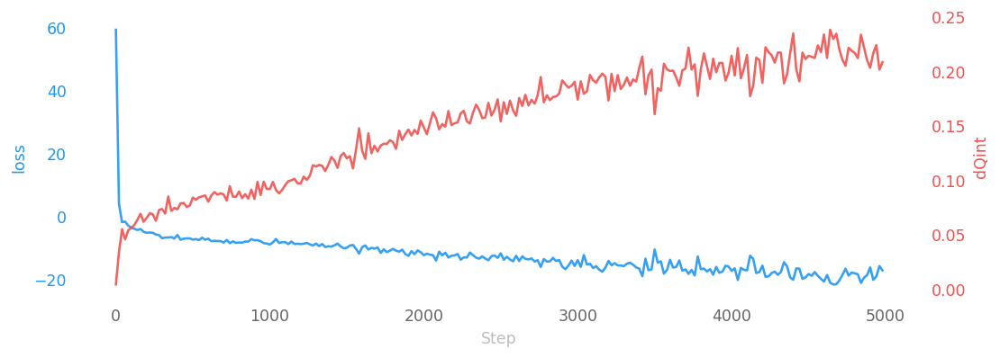

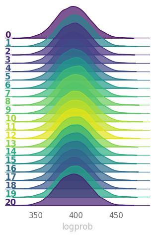
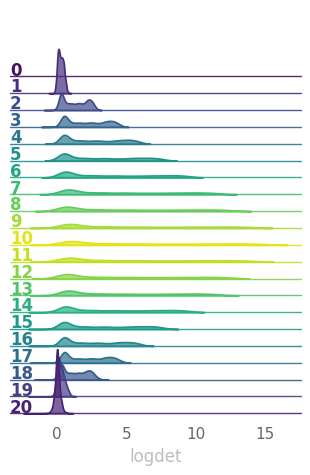
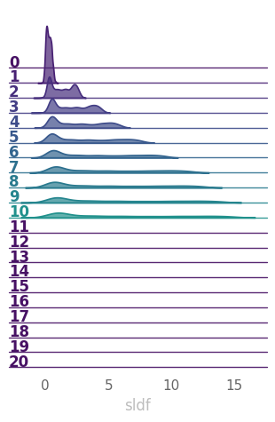
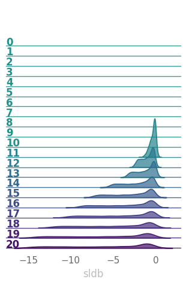
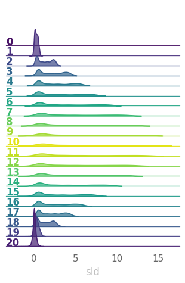
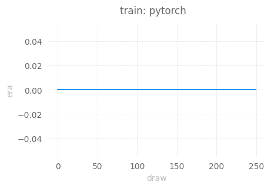
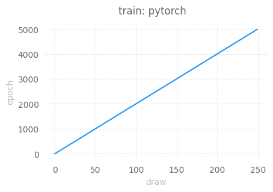
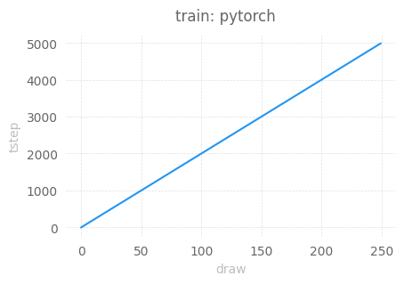


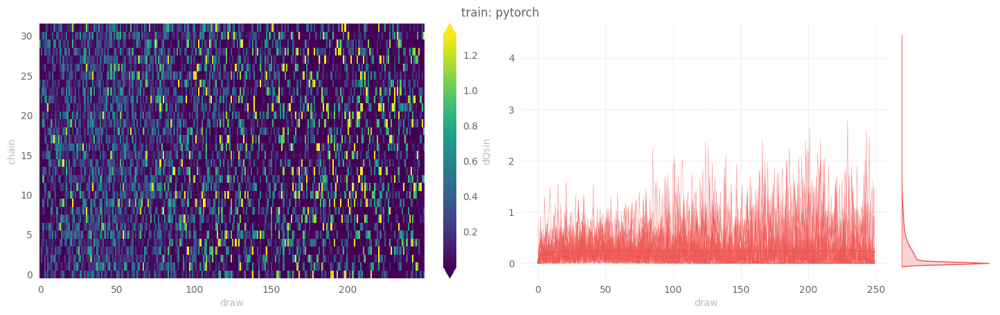
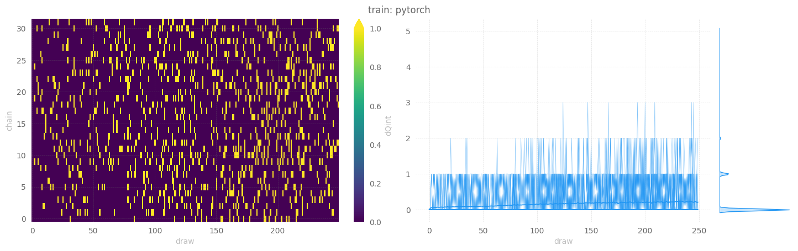

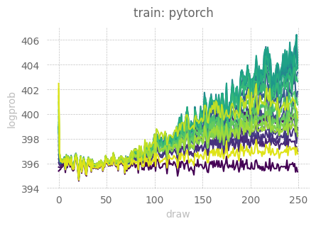
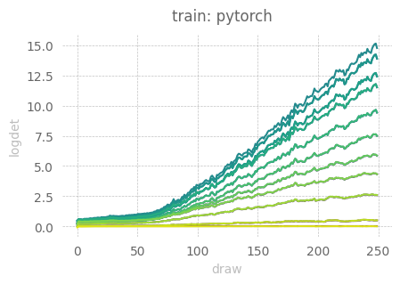
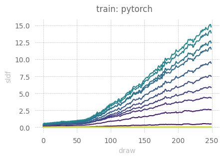
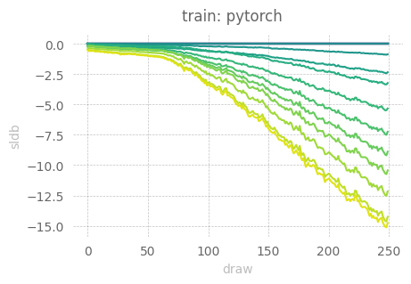
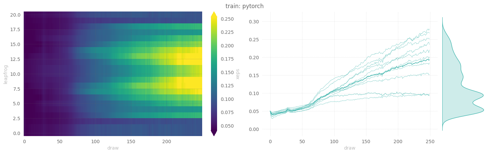

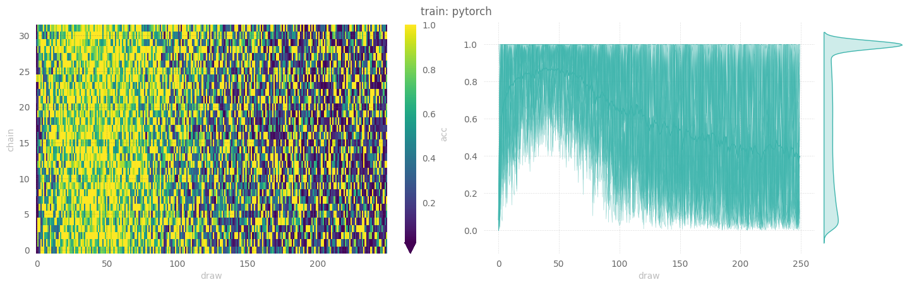
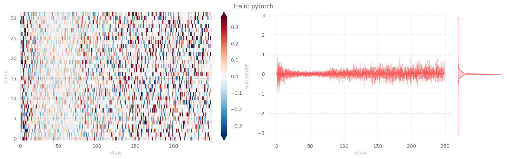
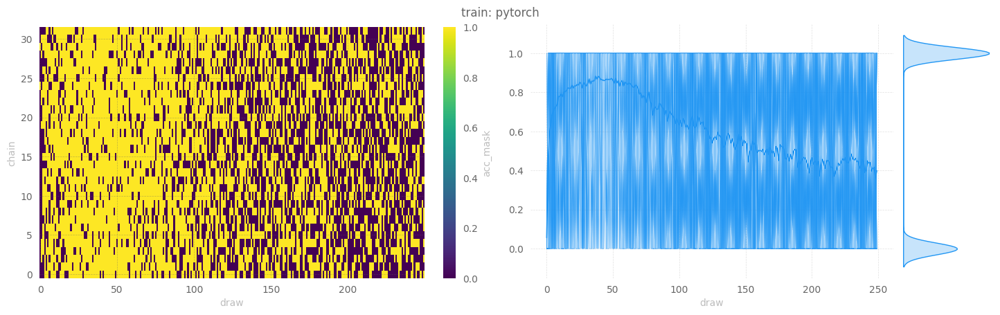


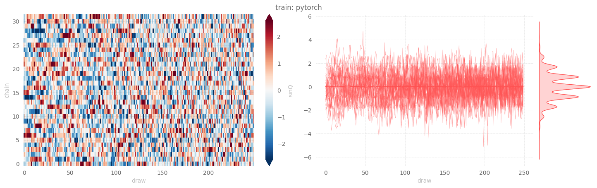
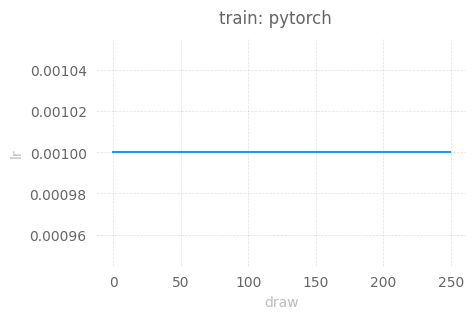
Inference
Evaluation
outputs['pytorch']['eval'] = ptExpU1.trainer.eval(
job_type='eval',
nprint=500,
nchains=128,
eval_steps=2000,
)
_ = ptExpU1.save_dataset(job_type='eval', nchains=32)[06/23/23 13:52:42][WARNING][trainer.py:435] - x.shape (original): torch.Size([4096, 2, 16, 16])
[06/23/23 13:52:42][WARNING][trainer.py:435] - x[:nchains].shape: torch.Size([128, 2, 16, 16])
[06/23/23 13:52:42][INFO][trainer.py:1051] - eps=None
beta=4.0
nlog=10
table=<rich.table.Table object at 0x7f2722bfbdf0>
nprint=500
eval_steps=2000
nleapfrog=None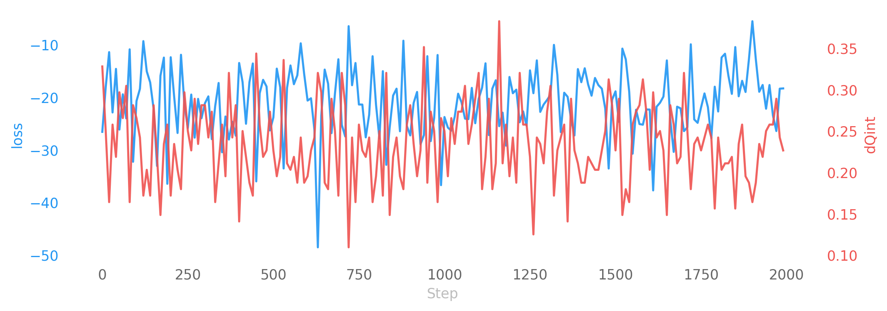
[06/23/23 13:52:46][INFO][trainer.py:1181] - estep=0 dt=0.278 beta=4.000 loss=-26.568 dQsin=0.310 dQint=0.328 energy=412.448 logprob=405.216 logdet=7.232 sldf=3.974 sldb=-3.865 sld=7.232 xeps=0.193 veps=0.148 acc=0.484 sumlogdet=0.003 acc_mask=0.508 plaqs=0.863 intQ=-0.086 sinQ=-0.055
[06/23/23 13:54:55][INFO][trainer.py:1181] - estep=500 dt=0.226 beta=4.000 loss=-23.825 dQsin=0.266 dQint=0.227 energy=407.989 logprob=400.742 logdet=7.247 sldf=3.976 sldb=-3.845 sld=7.247 xeps=0.193 veps=0.148 acc=0.470 sumlogdet=0.029 acc_mask=0.492 plaqs=0.862 intQ=-0.164 sinQ=-0.105
[06/23/23 13:57:02][INFO][trainer.py:1181] - estep=1000 dt=0.228 beta=4.000 loss=-23.745 dQsin=0.270 dQint=0.250 energy=410.211 logprob=402.944 logdet=7.266 sldf=3.987 sldb=-3.842 sld=7.266 xeps=0.193 veps=0.148 acc=0.456 sumlogdet=0.011 acc_mask=0.461 plaqs=0.863 intQ=-0.023 sinQ=-0.042
[06/23/23 13:59:11][INFO][trainer.py:1181] - estep=1500 dt=0.230 beta=4.000 loss=-18.855 dQsin=0.285 dQint=0.227 energy=408.605 logprob=401.337 logdet=7.267 sldf=3.984 sldb=-3.841 sld=7.267 xeps=0.193 veps=0.148 acc=0.432 sumlogdet=0.019 acc_mask=0.508 plaqs=0.863 intQ=0.125 sinQ=0.103
[06/23/23 14:01:28][INFO][plot_helpers.py:1005] - Saving figure to: /lus/grand/projects/datascience/foremans/locations/thetaGPU/projects/saforem2/l2hmc-qcd/src/l2hmc/notebooks/outputs/2023-06-23-125815/pytorch/plots/ridgeplots/svgs/energy_ridgeplot.svg
[06/23/23 14:01:32][INFO][plot_helpers.py:1005] - Saving figure to: /lus/grand/projects/datascience/foremans/locations/thetaGPU/projects/saforem2/l2hmc-qcd/src/l2hmc/notebooks/outputs/2023-06-23-125815/pytorch/plots/ridgeplots/svgs/logprob_ridgeplot.svg
[06/23/23 14:01:37][INFO][plot_helpers.py:1005] - Saving figure to: /lus/grand/projects/datascience/foremans/locations/thetaGPU/projects/saforem2/l2hmc-qcd/src/l2hmc/notebooks/outputs/2023-06-23-125815/pytorch/plots/ridgeplots/svgs/logdet_ridgeplot.svg
[06/23/23 14:01:41][INFO][plot_helpers.py:1005] - Saving figure to: /lus/grand/projects/datascience/foremans/locations/thetaGPU/projects/saforem2/l2hmc-qcd/src/l2hmc/notebooks/outputs/2023-06-23-125815/pytorch/plots/ridgeplots/svgs/sldf_ridgeplot.svg
[06/23/23 14:01:45][INFO][plot_helpers.py:1005] - Saving figure to: /lus/grand/projects/datascience/foremans/locations/thetaGPU/projects/saforem2/l2hmc-qcd/src/l2hmc/notebooks/outputs/2023-06-23-125815/pytorch/plots/ridgeplots/svgs/sldb_ridgeplot.svg
[06/23/23 14:01:50][INFO][plot_helpers.py:1005] - Saving figure to: /lus/grand/projects/datascience/foremans/locations/thetaGPU/projects/saforem2/l2hmc-qcd/src/l2hmc/notebooks/outputs/2023-06-23-125815/pytorch/plots/ridgeplots/svgs/sld_ridgeplot.svg
[06/23/23 14:02:02][INFO][common.py:271] - Saving dataset to: /lus/grand/projects/datascience/foremans/locations/thetaGPU/projects/saforem2/l2hmc-qcd/src/l2hmc/notebooks/outputs/2023-06-23-125815/pytorch/data/eval_data.h5
[06/23/23 14:02:03][INFO][experiment.py:362] - Done saving and analyzing data.
[06/23/23 14:02:03][INFO][experiment.py:363] - Creating summaries for WandB, Aim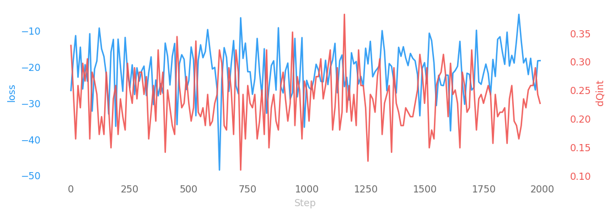
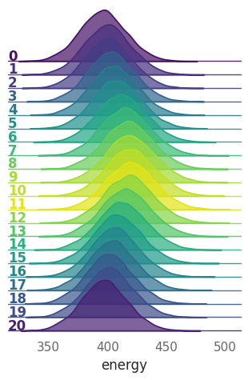

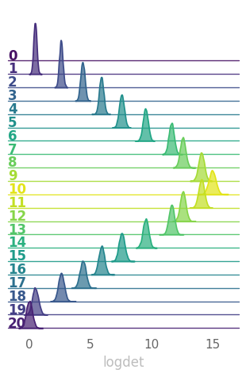
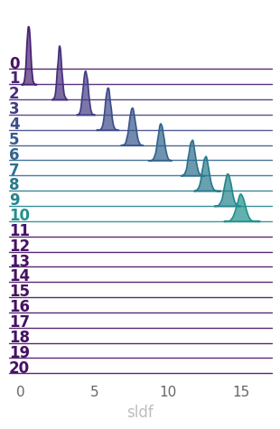
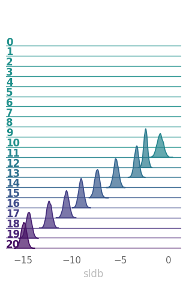

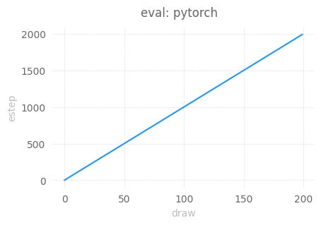
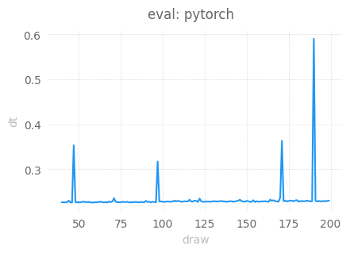
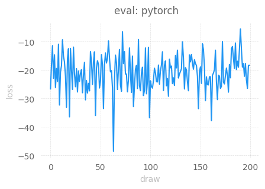
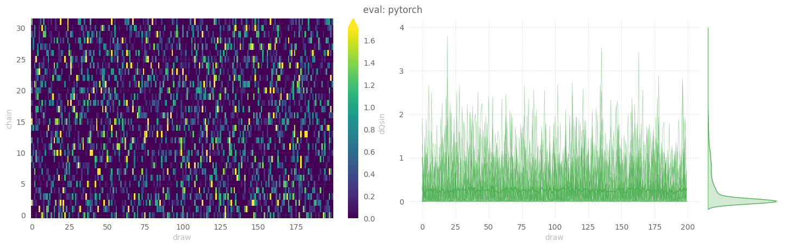

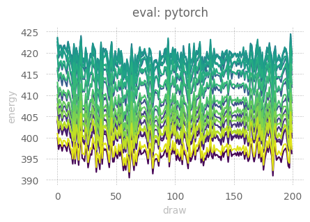

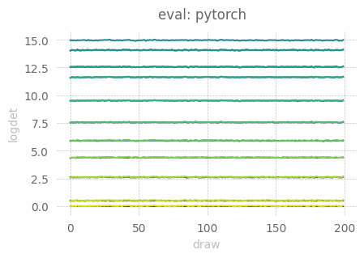
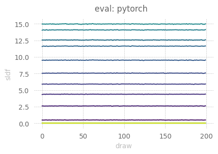


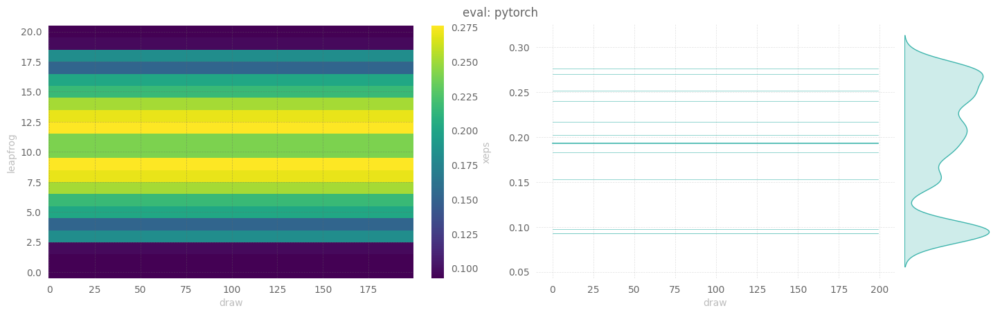
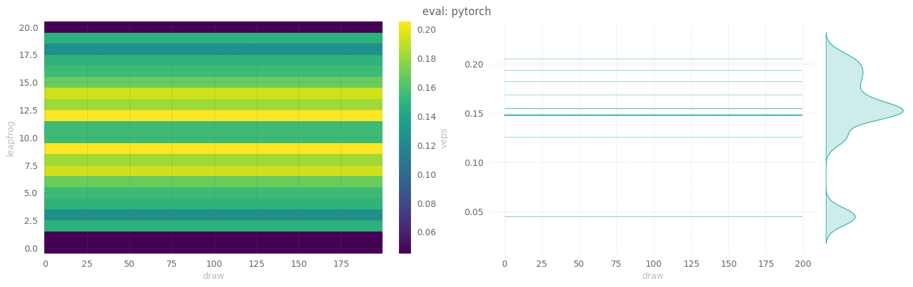


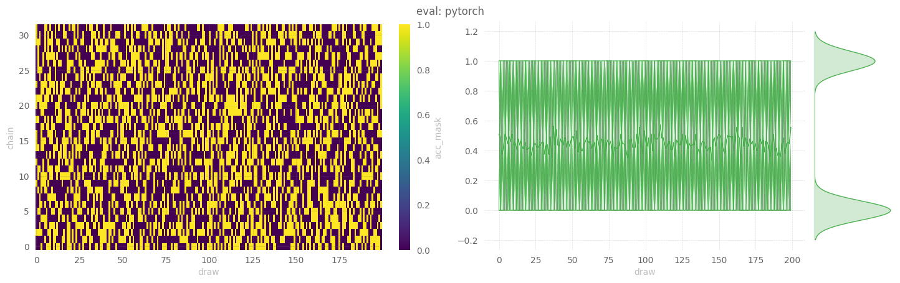
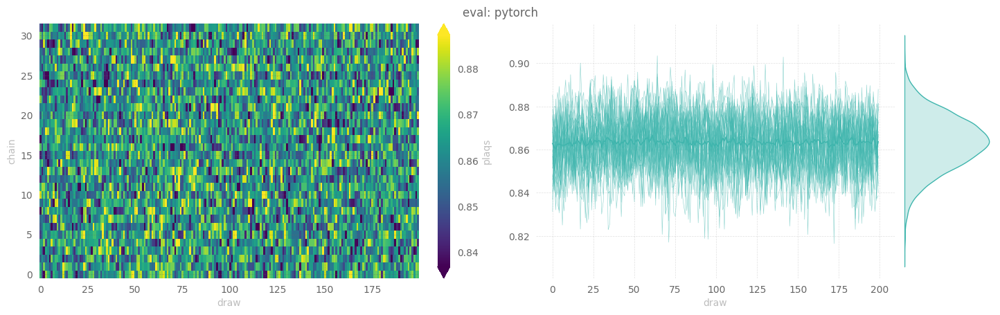
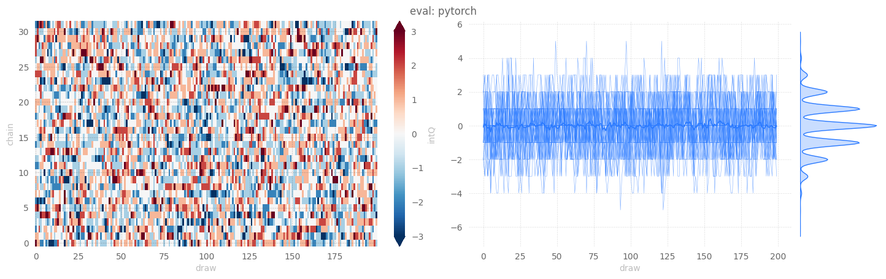
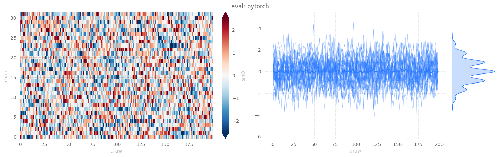
HMC
outputs['pytorch']['hmc'] = ptExpU1.trainer.eval(
job_type='hmc',
nprint=500,
nchains=128,
eval_steps=2000,
)
_ = ptExpU1.save_dataset(job_type='hmc', nchains=32)[06/23/23 14:02:13][WARNING][trainer.py:435] - Step size `eps` not specified for HMC! Using default: 0.1000 for generic HMC
[06/23/23 14:02:13][WARNING][trainer.py:435] - x.shape (original): torch.Size([4096, 2, 16, 16])
[06/23/23 14:02:13][WARNING][trainer.py:435] - x[:nchains].shape: torch.Size([128, 2, 16, 16])
[06/23/23 14:02:13][INFO][trainer.py:1051] - eps=0.1
beta=4.0
nlog=10
table=<rich.table.Table object at 0x7f266407a500>
nprint=500
eval_steps=2000
nleapfrog=20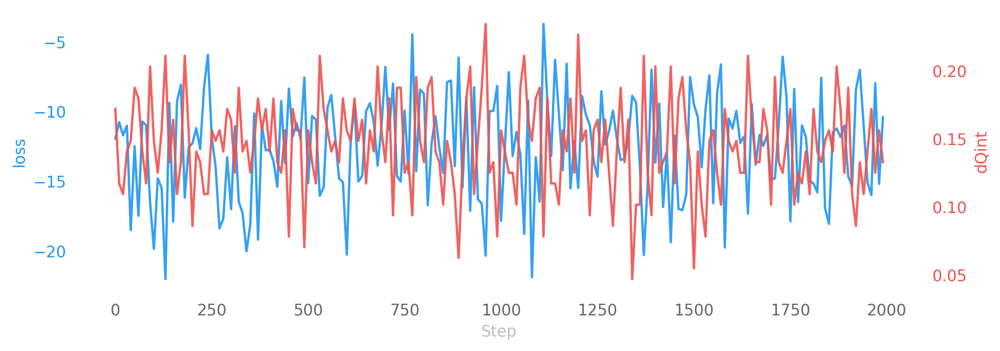
[06/23/23 14:02:17][INFO][trainer.py:1181] - hstep=0 dt=0.034 beta=4.000 loss=-11.965 dQsin=0.256 dQint=0.172 energy=395.464 logprob=395.464 logdet=0.000 acc=0.762 sumlogdet=0.000 acc_mask=0.734 plaqs=0.864 intQ=0.203 sinQ=0.148
[06/23/23 14:02:47][INFO][trainer.py:1181] - hstep=500 dt=0.035 beta=4.000 loss=-15.159 dQsin=0.263 dQint=0.156 energy=395.520 logprob=395.520 logdet=0.000 acc=0.771 sumlogdet=0.000 acc_mask=0.734 plaqs=0.864 intQ=-0.078 sinQ=-0.086
[06/23/23 14:03:20][INFO][trainer.py:1181] - hstep=1000 dt=0.035 beta=4.000 loss=-17.856 dQsin=0.307 dQint=0.156 energy=395.126 logprob=395.126 logdet=0.000 acc=0.832 sumlogdet=0.000 acc_mask=0.859 plaqs=0.864 intQ=0.125 sinQ=0.102
[06/23/23 14:03:52][INFO][trainer.py:1181] - hstep=1500 dt=0.035 beta=4.000 loss=-9.512 dQsin=0.242 dQint=0.055 energy=397.486 logprob=397.486 logdet=0.000 acc=0.791 sumlogdet=0.000 acc_mask=0.812 plaqs=0.863 intQ=-0.148 sinQ=-0.106
[06/23/23 14:04:26][INFO][plot_helpers.py:1005] - Saving figure to: /lus/grand/projects/datascience/foremans/locations/thetaGPU/projects/saforem2/l2hmc-qcd/src/l2hmc/notebooks/outputs/2023-06-23-125815/pytorch/plots/ridgeplots/svgs/energy_ridgeplot.svg
[06/23/23 14:04:32][INFO][plot_helpers.py:1005] - Saving figure to: /lus/grand/projects/datascience/foremans/locations/thetaGPU/projects/saforem2/l2hmc-qcd/src/l2hmc/notebooks/outputs/2023-06-23-125815/pytorch/plots/ridgeplots/svgs/logprob_ridgeplot.svg
[06/23/23 14:04:36][INFO][plot_helpers.py:1005] - Saving figure to: /lus/grand/projects/datascience/foremans/locations/thetaGPU/projects/saforem2/l2hmc-qcd/src/l2hmc/notebooks/outputs/2023-06-23-125815/pytorch/plots/ridgeplots/svgs/logdet_ridgeplot.svg
[06/23/23 14:04:46][INFO][common.py:271] - Saving dataset to: /lus/grand/projects/datascience/foremans/locations/thetaGPU/projects/saforem2/l2hmc-qcd/src/l2hmc/notebooks/outputs/2023-06-23-125815/pytorch/data/hmc_data.h5
[06/23/23 14:04:46][INFO][experiment.py:362] - Done saving and analyzing data.
[06/23/23 14:04:46][INFO][experiment.py:363] - Creating summaries for WandB, Aim


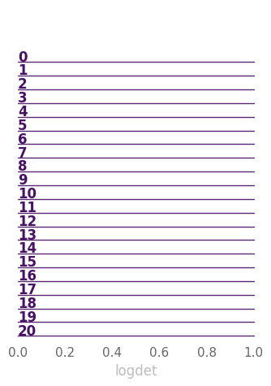

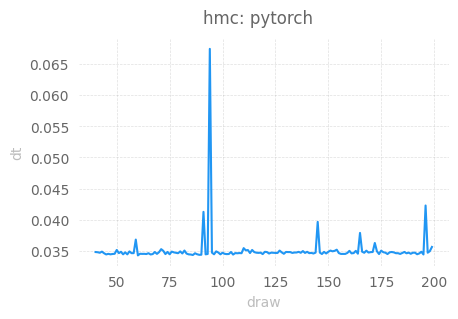
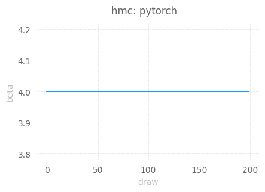
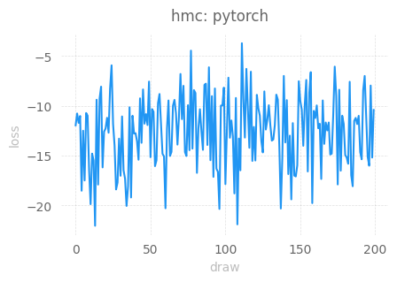


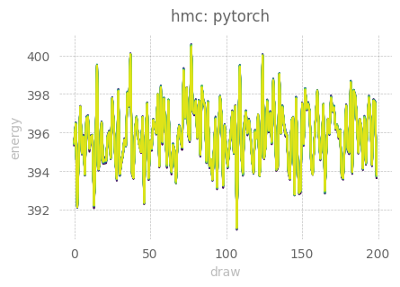

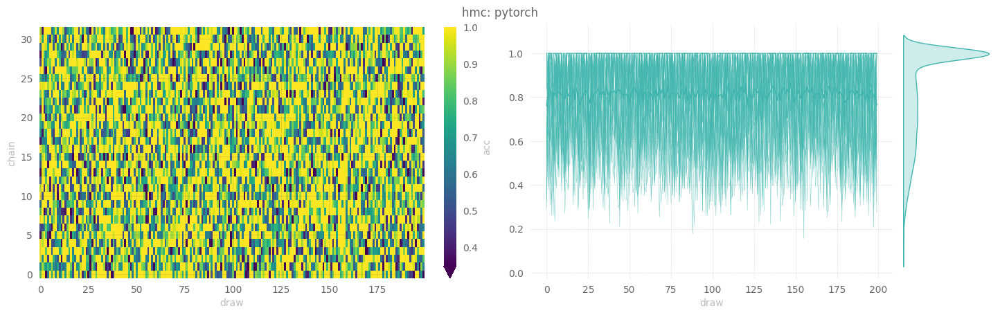

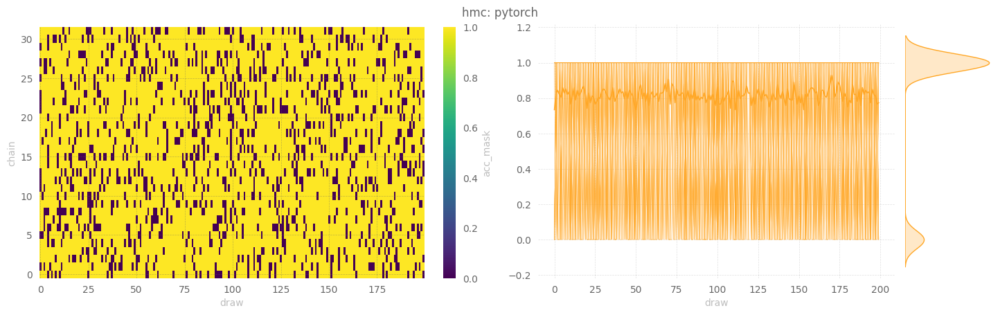
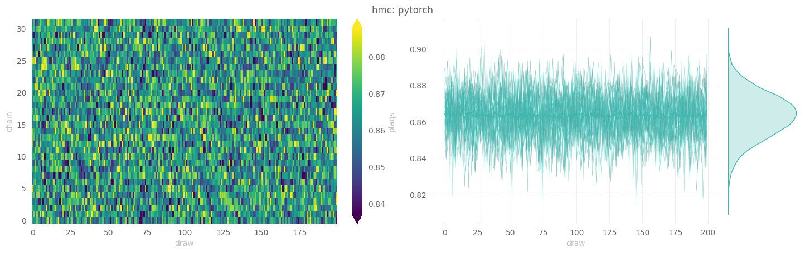
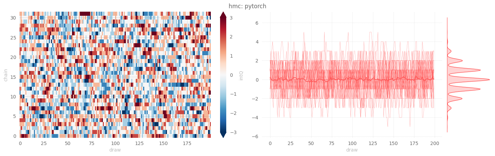
TensorFlow
Train
outputs['tensorflow']['train'] = tfExpU1.trainer.train()
# nera=5,
# nepoch=2000,
# beta=[4.0, 4.25, 4.5, 4.75, 5.0],
#)
_ = tfExpU1.save_dataset(job_type='train', nchains=32)[06/23/23 14:05:07][INFO][trainer.py:200] - Looking for checkpoints in: /lus/grand/projects/DLHMC/foremans/locations/thetaGPU/projects/l2hmc-qcd/src/l2hmc/checkpoints/U1/2-16-16/nlf-10/xsplit-True/sepnets-True/merge-True/net-16-16-16_dp-0.2_bn-False/tensorflow
[06/23/23 14:05:07][INFO][trainer.py:200] - No checkpoints found to load from. Continuing[06/23/23 14:05:07][INFO][trainer.py:1266] - ERA: 0 / 1, BETA: 4.000
[06/23/23 14:06:32][INFO][trainer.py:200] - Thermalizing configs @ 4.00 took 85.1316 s{"model_id":"3ce8a6d5ef17444abb0644b54156bbcf","version_major":2,"version_minor":0}WARNING:tensorflow:From /lus/grand/projects/datascience/foremans/locations/thetaGPU/miniconda3/envs/2023-04-26/lib/python3.10/site-packages/tensorflow/python/autograph/pyct/static_analysis/liveness.py:83: Analyzer.lamba_check (from tensorflow.python.autograph.pyct.static_analysis.liveness) is deprecated and will be removed after 2023-09-23.
Instructions for updating:
Lambda fuctions will be no more assumed to be used in the statement where they are used, or at least in the same block. https://github.com/tensorflow/tensorflow/issues/56089
[06/23/23 14:08:07][INFO][trainer.py:1089] - era=0 epoch=0 tstep=1.000 dt=93.926 beta=4.000 loss=97.795 dQsin=0.001 dQint=0.001 energy=1281.699 logprob=1281.654 logdet=0.046 sldf=0.060 sldb=0.094 sld=0.046 xeps=0.050 veps=0.050 acc=0.001 sumlogdet=-0.001 acc_mask=0.001 plaqs=0.021 intQ=-0.042 sinQ=0.020 lr=0.001
[06/23/23 14:09:11][INFO][trainer.py:1089] - era=0 epoch=240 tstep=241.000 dt=0.239 beta=4.000 loss=-0.984 dQsin=0.153 dQint=0.055 energy=395.706 logprob=396.037 logdet=-0.332 sldf=-0.175 sldb=0.045 sld=-0.332 xeps=0.048 veps=0.044 acc=0.550 sumlogdet=0.004 acc_mask=0.555 plaqs=0.864 intQ=0.010 sinQ=0.003 lr=0.001
[06/23/23 14:10:15][INFO][trainer.py:1089] - era=0 epoch=500 tstep=501.000 dt=0.241 beta=4.000 loss=-4.051 dQsin=0.190 dQint=0.064 energy=394.337 logprob=395.721 logdet=-1.383 sldf=-0.746 sldb=0.488 sld=-1.383 xeps=0.047 veps=0.043 acc=0.709 sumlogdet=-0.025 acc_mask=0.708 plaqs=0.864 intQ=-0.025 sinQ=-0.025 lr=0.001
[06/23/23 14:11:22][INFO][trainer.py:1089] - era=0 epoch=740 tstep=741.000 dt=0.236 beta=4.000 loss=-6.052 dQsin=0.206 dQint=0.072 energy=394.177 logprob=395.854 logdet=-1.677 sldf=-0.908 sldb=0.629 sld=-1.677 xeps=0.048 veps=0.043 acc=0.759 sumlogdet=-0.001 acc_mask=0.754 plaqs=0.864 intQ=0.006 sinQ=0.003 lr=0.001
[06/23/23 14:12:27][INFO][trainer.py:1089] - era=0 epoch=1000 tstep=1001.000 dt=0.244 beta=4.000 loss=-6.203 dQsin=0.221 dQint=0.075 energy=394.858 logprob=396.599 logdet=-1.742 sldf=-0.942 sldb=0.653 sld=-1.742 xeps=0.049 veps=0.045 acc=0.811 sumlogdet=-0.011 acc_mask=0.812 plaqs=0.863 intQ=0.029 sinQ=0.026 lr=0.001
[06/23/23 14:13:32][INFO][trainer.py:1089] - era=0 epoch=1240 tstep=1241.000 dt=0.234 beta=4.000 loss=-7.401 dQsin=0.235 dQint=0.084 energy=394.913 logprob=396.405 logdet=-1.493 sldf=-0.809 sldb=0.544 sld=-1.493 xeps=0.050 veps=0.046 acc=0.833 sumlogdet=0.004 acc_mask=0.831 plaqs=0.863 intQ=0.023 sinQ=0.021 lr=0.001
[06/23/23 14:14:40][INFO][trainer.py:1089] - era=0 epoch=1500 tstep=1501.000 dt=0.241 beta=4.000 loss=-7.387 dQsin=0.239 dQint=0.089 energy=394.786 logprob=395.871 logdet=-1.084 sldf=-0.586 sldb=0.393 sld=-1.084 xeps=0.051 veps=0.047 acc=0.854 sumlogdet=-0.001 acc_mask=0.854 plaqs=0.864 intQ=-0.008 sinQ=-0.012 lr=0.001
[06/23/23 14:15:46][INFO][trainer.py:1089] - era=0 epoch=1740 tstep=1741.000 dt=0.276 beta=4.000 loss=-8.684 dQsin=0.250 dQint=0.086 energy=394.998 logprob=395.804 logdet=-0.806 sldf=-0.438 sldb=0.318 sld=-0.806 xeps=0.053 veps=0.049 acc=0.878 sumlogdet=0.001 acc_mask=0.873 plaqs=0.864 intQ=0.036 sinQ=0.023 lr=0.001
[06/23/23 14:16:52][INFO][trainer.py:1089] - era=0 epoch=2000 tstep=2001.000 dt=0.280 beta=4.000 loss=-8.376 dQsin=0.255 dQint=0.095 energy=394.788 logprob=395.364 logdet=-0.576 sldf=-0.314 sldb=0.244 sld=-0.576 xeps=0.054 veps=0.050 acc=0.896 sumlogdet=0.002 acc_mask=0.897 plaqs=0.863 intQ=-0.023 sinQ=-0.021 lr=0.001
[06/23/23 14:17:56][INFO][trainer.py:1089] - era=0 epoch=2240 tstep=2241.000 dt=0.238 beta=4.000 loss=-9.100 dQsin=0.258 dQint=0.106 energy=395.875 logprob=396.324 logdet=-0.449 sldf=-0.245 sldb=0.219 sld=-0.449 xeps=0.059 veps=0.054 acc=0.904 sumlogdet=-0.002 acc_mask=0.902 plaqs=0.863 intQ=0.029 sinQ=0.027 lr=0.001
[06/23/23 14:19:00][INFO][trainer.py:1089] - era=0 epoch=2500 tstep=2501.000 dt=0.244 beta=4.000 loss=-9.489 dQsin=0.247 dQint=0.103 energy=395.602 logprob=395.899 logdet=-0.297 sldf=-0.165 sldb=0.195 sld=-0.297 xeps=0.064 veps=0.058 acc=0.876 sumlogdet=0.001 acc_mask=0.864 plaqs=0.864 intQ=0.028 sinQ=0.024 lr=0.001
[06/23/23 14:20:04][INFO][trainer.py:1089] - era=0 epoch=2740 tstep=2741.000 dt=0.251 beta=4.000 loss=-9.468 dQsin=0.250 dQint=0.107 energy=395.899 logprob=396.116 logdet=-0.217 sldf=-0.122 sldb=0.183 sld=-0.217 xeps=0.072 veps=0.065 acc=0.857 sumlogdet=0.001 acc_mask=0.854 plaqs=0.863 intQ=-0.045 sinQ=-0.034 lr=0.001
[06/23/23 14:21:08][INFO][trainer.py:1089] - era=0 epoch=3000 tstep=3001.000 dt=0.236 beta=4.000 loss=-10.554 dQsin=0.248 dQint=0.132 energy=395.727 logprob=395.661 logdet=0.065 sldf=0.030 sldb=0.088 sld=0.065 xeps=0.084 veps=0.071 acc=0.782 sumlogdet=0.002 acc_mask=0.781 plaqs=0.864 intQ=0.024 sinQ=0.015 lr=0.001
[06/23/23 14:22:12][INFO][trainer.py:1089] - era=0 epoch=3240 tstep=3241.000 dt=0.253 beta=4.000 loss=-10.425 dQsin=0.252 dQint=0.141 energy=396.195 logprob=396.024 logdet=0.171 sldf=0.086 sldb=0.076 sld=0.171 xeps=0.094 veps=0.080 acc=0.790 sumlogdet=0.002 acc_mask=0.795 plaqs=0.864 intQ=-0.002 sinQ=-0.000 lr=0.001
[06/23/23 14:23:17][INFO][trainer.py:1089] - era=0 epoch=3500 tstep=3501.000 dt=0.271 beta=4.000 loss=-13.095 dQsin=0.254 dQint=0.161 energy=396.836 logprob=396.210 logdet=0.627 sldf=0.335 sldb=-0.134 sld=0.627 xeps=0.109 veps=0.089 acc=0.709 sumlogdet=0.002 acc_mask=0.708 plaqs=0.864 intQ=0.045 sinQ=0.043 lr=0.001
[06/23/23 14:24:22][INFO][trainer.py:1089] - era=0 epoch=3740 tstep=3741.000 dt=0.242 beta=4.000 loss=-13.164 dQsin=0.226 dQint=0.160 energy=399.160 logprob=397.731 logdet=1.429 sldf=0.772 sldb=-0.496 sld=1.429 xeps=0.123 veps=0.093 acc=0.585 sumlogdet=-0.003 acc_mask=0.574 plaqs=0.864 intQ=0.002 sinQ=-0.000 lr=0.001
[06/23/23 14:25:27][INFO][trainer.py:1089] - era=0 epoch=4000 tstep=4001.000 dt=0.254 beta=4.000 loss=-15.590 dQsin=0.251 dQint=0.197 energy=399.077 logprob=397.221 logdet=1.856 sldf=1.005 sldb=-0.672 sld=1.856 xeps=0.138 veps=0.104 acc=0.600 sumlogdet=-0.006 acc_mask=0.601 plaqs=0.863 intQ=-0.021 sinQ=-0.013 lr=0.001
[06/23/23 14:26:31][INFO][trainer.py:1089] - era=0 epoch=4240 tstep=4241.000 dt=0.244 beta=4.000 loss=-14.301 dQsin=0.232 dQint=0.177 energy=401.006 logprob=398.483 logdet=2.523 sldf=1.369 sldb=-1.005 sld=2.523 xeps=0.150 veps=0.109 acc=0.538 sumlogdet=0.006 acc_mask=0.539 plaqs=0.864 intQ=0.018 sinQ=0.008 lr=0.001
[06/23/23 14:27:38][INFO][trainer.py:1089] - era=0 epoch=4500 tstep=4501.000 dt=0.245 beta=4.000 loss=-14.125 dQsin=0.209 dQint=0.183 energy=403.764 logprob=400.618 logdet=3.145 sldf=1.714 sldb=-1.357 sld=3.145 xeps=0.166 veps=0.109 acc=0.411 sumlogdet=-0.002 acc_mask=0.407 plaqs=0.863 intQ=0.014 sinQ=0.017 lr=0.001
[06/23/23 14:28:43][INFO][trainer.py:1089] - era=0 epoch=4740 tstep=4741.000 dt=0.241 beta=4.000 loss=-21.004 dQsin=0.266 dQint=0.235 energy=402.266 logprob=399.061 logdet=3.205 sldf=1.750 sldb=-1.493 sld=3.205 xeps=0.172 veps=0.121 acc=0.536 sumlogdet=0.002 acc_mask=0.539 plaqs=0.863 intQ=-0.024 sinQ=-0.016 lr=0.001
[06/23/23 14:29:47][INFO][trainer.py:1303] - Saving took: 3.12328e-05s
[06/23/23 14:29:47][INFO][trainer.py:1304] - Checkpoint saved to: /lus/grand/projects/DLHMC/foremans/locations/thetaGPU/projects/l2hmc-qcd/src/l2hmc/checkpoints/U1/2-16-16/nlf-10/xsplit-True/sepnets-True/merge-True/net-16-16-16_dp-0.2_bn-False/tensorflow
[06/23/23 14:29:47][INFO][trainer.py:1305] - Era 0 took: 1480.06s
[06/23/23 14:29:52][INFO][plot_helpers.py:1005] - Saving figure to: /lus/grand/projects/datascience/foremans/locations/thetaGPU/projects/saforem2/l2hmc-qcd/src/l2hmc/notebooks/outputs/2023-06-23-125818/tensorflow/plots/ridgeplots/svgs/energy_ridgeplot.svg
[06/23/23 14:29:58][INFO][plot_helpers.py:1005] - Saving figure to: /lus/grand/projects/datascience/foremans/locations/thetaGPU/projects/saforem2/l2hmc-qcd/src/l2hmc/notebooks/outputs/2023-06-23-125818/tensorflow/plots/ridgeplots/svgs/logprob_ridgeplot.svg
[06/23/23 14:30:03][INFO][plot_helpers.py:1005] - Saving figure to: /lus/grand/projects/datascience/foremans/locations/thetaGPU/projects/saforem2/l2hmc-qcd/src/l2hmc/notebooks/outputs/2023-06-23-125818/tensorflow/plots/ridgeplots/svgs/logdet_ridgeplot.svg
[06/23/23 14:30:08][INFO][plot_helpers.py:1005] - Saving figure to: /lus/grand/projects/datascience/foremans/locations/thetaGPU/projects/saforem2/l2hmc-qcd/src/l2hmc/notebooks/outputs/2023-06-23-125818/tensorflow/plots/ridgeplots/svgs/sldf_ridgeplot.svg
[06/23/23 14:30:13][INFO][plot_helpers.py:1005] - Saving figure to: /lus/grand/projects/datascience/foremans/locations/thetaGPU/projects/saforem2/l2hmc-qcd/src/l2hmc/notebooks/outputs/2023-06-23-125818/tensorflow/plots/ridgeplots/svgs/sldb_ridgeplot.svg
[06/23/23 14:30:18][INFO][plot_helpers.py:1005] - Saving figure to: /lus/grand/projects/datascience/foremans/locations/thetaGPU/projects/saforem2/l2hmc-qcd/src/l2hmc/notebooks/outputs/2023-06-23-125818/tensorflow/plots/ridgeplots/svgs/sld_ridgeplot.svg
[06/23/23 14:31:02][INFO][common.py:271] - Saving dataset to: /lus/grand/projects/datascience/foremans/locations/thetaGPU/projects/saforem2/l2hmc-qcd/src/l2hmc/notebooks/outputs/2023-06-23-125818/tensorflow/data/train_data.h5
[06/23/23 14:31:12][INFO][experiment.py:362] - Done saving and analyzing data.
[06/23/23 14:31:12][INFO][experiment.py:363] - Creating summaries for WandB, Aim


Inference
Evaluate
outputs['tensorflow']['eval'] = tfExpU1.trainer.eval(
job_type='eval',
nprint=500,
nchains=128,
eval_steps=2000,
)
_ = tfExpU1.save_dataset(job_type='eval', nchains=32)[06/23/23 14:31:23][WARNING][trainer.py:196] - x.shape (original): (4096, 2, 16, 16)
[06/23/23 14:31:23][WARNING][trainer.py:196] - x[:nchains].shape: (128, 2, 16, 16)
[06/23/23 14:31:23][INFO][trainer.py:200] - eps = None
beta = 4.0
nlog = 10
table = <rich.table.Table object at 0x7f26042c9e70>
nprint = 500
eval_steps = 2000
nleapfrog = None{"model_id":"42d6b6d371eb4dbca473bb047e79f408","version_major":2,"version_minor":0}[06/23/23 14:33:00][INFO][trainer.py:200] - estep=0 dt=13.921 beta=4.000 loss=-34.934 dQsin=0.296 dQint=0.242 energy=402.696 logprob=398.796 logdet=3.900 sldf=2.138 sldb=-1.896 sld=3.900 xeps=0.183 veps=0.124 acc=0.472 sumlogdet=0.008 acc_mask=0.469 plaqs=0.865 intQ=0.094 sinQ=0.060
[06/23/23 14:33:49][INFO][trainer.py:200] - estep=500 dt=0.049 beta=4.000 loss=-14.736 dQsin=0.258 dQint=0.203 energy=404.299 logprob=400.366 logdet=3.932 sldf=2.151 sldb=-1.896 sld=3.932 xeps=0.183 veps=0.124 acc=0.456 sumlogdet=-0.009 acc_mask=0.500 plaqs=0.862 intQ=-0.211 sinQ=-0.169
[06/23/23 14:34:27][INFO][trainer.py:200] - estep=1000 dt=0.048 beta=4.000 loss=-14.039 dQsin=0.233 dQint=0.211 energy=403.103 logprob=399.185 logdet=3.917 sldf=2.142 sldb=-1.890 sld=3.917 xeps=0.183 veps=0.124 acc=0.477 sumlogdet=0.034 acc_mask=0.477 plaqs=0.864 intQ=0.070 sinQ=0.055
[06/23/23 14:35:05][INFO][trainer.py:200] - estep=1500 dt=0.048 beta=4.000 loss=-19.743 dQsin=0.225 dQint=0.203 energy=402.832 logprob=398.931 logdet=3.901 sldf=2.136 sldb=-1.895 sld=3.901 xeps=0.183 veps=0.124 acc=0.437 sumlogdet=-0.012 acc_mask=0.453 plaqs=0.864 intQ=-0.016 sinQ=-0.026
[06/23/23 14:35:49][INFO][plot_helpers.py:1005] - Saving figure to: /lus/grand/projects/datascience/foremans/locations/thetaGPU/projects/saforem2/l2hmc-qcd/src/l2hmc/notebooks/outputs/2023-06-23-125818/tensorflow/plots/ridgeplots/svgs/energy_ridgeplot.svg
[06/23/23 14:35:54][INFO][plot_helpers.py:1005] - Saving figure to: /lus/grand/projects/datascience/foremans/locations/thetaGPU/projects/saforem2/l2hmc-qcd/src/l2hmc/notebooks/outputs/2023-06-23-125818/tensorflow/plots/ridgeplots/svgs/logprob_ridgeplot.svg
[06/23/23 14:35:59][INFO][plot_helpers.py:1005] - Saving figure to: /lus/grand/projects/datascience/foremans/locations/thetaGPU/projects/saforem2/l2hmc-qcd/src/l2hmc/notebooks/outputs/2023-06-23-125818/tensorflow/plots/ridgeplots/svgs/logdet_ridgeplot.svg
[06/23/23 14:36:04][INFO][plot_helpers.py:1005] - Saving figure to: /lus/grand/projects/datascience/foremans/locations/thetaGPU/projects/saforem2/l2hmc-qcd/src/l2hmc/notebooks/outputs/2023-06-23-125818/tensorflow/plots/ridgeplots/svgs/sldf_ridgeplot.svg
[06/23/23 14:36:09][INFO][plot_helpers.py:1005] - Saving figure to: /lus/grand/projects/datascience/foremans/locations/thetaGPU/projects/saforem2/l2hmc-qcd/src/l2hmc/notebooks/outputs/2023-06-23-125818/tensorflow/plots/ridgeplots/svgs/sldb_ridgeplot.svg
[06/23/23 14:36:14][INFO][plot_helpers.py:1005] - Saving figure to: /lus/grand/projects/datascience/foremans/locations/thetaGPU/projects/saforem2/l2hmc-qcd/src/l2hmc/notebooks/outputs/2023-06-23-125818/tensorflow/plots/ridgeplots/svgs/sld_ridgeplot.svg
[06/23/23 14:36:29][INFO][common.py:271] - Saving dataset to: /lus/grand/projects/datascience/foremans/locations/thetaGPU/projects/saforem2/l2hmc-qcd/src/l2hmc/notebooks/outputs/2023-06-23-125818/tensorflow/data/eval_data.h5
[06/23/23 14:36:29][INFO][experiment.py:362] - Done saving and analyzing data.
[06/23/23 14:36:29][INFO][experiment.py:363] - Creating summaries for WandB, Aim


HMC
outputs['tensorflow']['hmc'] = tfExpU1.trainer.eval(
job_type='hmc',
nprint=500,
nchains=128,
eval_steps=2000,
)
_ = tfExpU1.save_dataset(job_type='hmc', nchains=32)[06/23/23 14:36:40][WARNING][trainer.py:196] - Step size `eps` not specified for HMC! Using default: 0.1000 for generic HMC
[06/23/23 14:36:40][WARNING][trainer.py:196] - x.shape (original): (4096, 2, 16, 16)
[06/23/23 14:36:40][WARNING][trainer.py:196] - x[:nchains].shape: (128, 2, 16, 16)
[06/23/23 14:36:40][INFO][trainer.py:200] - eps = 0.1
beta = 4.0
nlog = 10
table = <rich.table.Table object at 0x7f17f07da080>
nprint = 500
eval_steps = 2000
nleapfrog = 20{"model_id":"c9e14ead5fda4789a4a40038a941d064","version_major":2,"version_minor":0}[06/23/23 14:38:03][INFO][trainer.py:200] - hstep=0 dt=0.197 beta=4.000 loss=-14.990 dQsin=0.288 dQint=0.195 energy=397.008 logprob=397.008 logdet=0.000 acc=0.822 sumlogdet=0.000 acc_mask=0.828 plaqs=0.862 intQ=-0.148 sinQ=-0.153
[06/23/23 14:39:55][INFO][trainer.py:200] - hstep=500 dt=0.193 beta=4.000 loss=-11.040 dQsin=0.261 dQint=0.141 energy=396.582 logprob=396.582 logdet=0.000 acc=0.815 sumlogdet=0.000 acc_mask=0.781 plaqs=0.862 intQ=0.055 sinQ=0.060
[06/23/23 14:41:47][INFO][trainer.py:200] - hstep=1000 dt=0.193 beta=4.000 loss=-14.025 dQsin=0.287 dQint=0.180 energy=395.838 logprob=395.838 logdet=0.000 acc=0.818 sumlogdet=0.000 acc_mask=0.836 plaqs=0.863 intQ=-0.117 sinQ=-0.090
[06/23/23 14:43:39][INFO][trainer.py:200] - hstep=1500 dt=0.193 beta=4.000 loss=-18.793 dQsin=0.300 dQint=0.195 energy=393.051 logprob=393.051 logdet=0.000 acc=0.813 sumlogdet=0.000 acc_mask=0.844 plaqs=0.862 intQ=0.047 sinQ=0.039
[06/23/23 14:45:36][INFO][plot_helpers.py:1005] - Saving figure to: /lus/grand/projects/datascience/foremans/locations/thetaGPU/projects/saforem2/l2hmc-qcd/src/l2hmc/notebooks/outputs/2023-06-23-125818/tensorflow/plots/ridgeplots/svgs/energy_ridgeplot.svg
[06/23/23 14:45:45][INFO][plot_helpers.py:1005] - Saving figure to: /lus/grand/projects/datascience/foremans/locations/thetaGPU/projects/saforem2/l2hmc-qcd/src/l2hmc/notebooks/outputs/2023-06-23-125818/tensorflow/plots/ridgeplots/svgs/logprob_ridgeplot.svg
[06/23/23 14:45:49][INFO][plot_helpers.py:1005] - Saving figure to: /lus/grand/projects/datascience/foremans/locations/thetaGPU/projects/saforem2/l2hmc-qcd/src/l2hmc/notebooks/outputs/2023-06-23-125818/tensorflow/plots/ridgeplots/svgs/logdet_ridgeplot.svg
[06/23/23 14:46:01][INFO][common.py:271] - Saving dataset to: /lus/grand/projects/datascience/foremans/locations/thetaGPU/projects/saforem2/l2hmc-qcd/src/l2hmc/notebooks/outputs/2023-06-23-125818/tensorflow/data/hmc_data.h5
[06/23/23 14:46:01][INFO][experiment.py:362] - Done saving and analyzing data.
[06/23/23 14:46:01][INFO][experiment.py:363] - Creating summaries for WandB, Aim


Model Performance
Our goal is improving the efficiency of our MCMC sampler.
In particular, we are interested in generating independent save_datasetrations which we can then use to calculate expectation values of physical observables.
For our purposes, we are interested in obtaining lattice configurations from distinct topological charge sectors, as characterized by a configurations topological charge, Q.
HMC is known to suffer from critical slowing down, a phenomenon in which our configurations remains stuck in some local topological charge sector and fails to produce distinct configurations.
In particular, it is known that the integrated autocorrelation time of the topological charge \tau grows exponentially with decreasing lattice spacing (i.e. continuum limit), making this theory especially problematic.
Because of this, we can assess our models’ performance by looking at the tunneling rate, i.e. the rate at which our sampler jumps between these different charge sectors.
We can write this quantity as:
\delta Q = |Q^{(i)} - Q^{(i-1)}|
where we look at the difference in the topological charge between sequential configurations.
Note: The efficiency of our sampler is directly proportional to the tunneling rate, which is inversely proportional to the integrated autocorrelation time \tau, i.e. \text{Efficiency} \propto \delta Q \propto \frac{1}{\tau} Explicitly, this means that the more efficient the model \longrightarrow - the larger tunneling rate - the smaller integrated autocorrelation time for Q
import xarray as xr
def get_thermalized_configs(
x: np.ndarray | xr.DataArray,
drop: int = 5
) -> np.ndarray | xr.DataArray:
"""Drop the first `drop` states across all chains.
x.shape = [draws, chains]
"""
if isinstance(x, np.ndarray):
return np.sort(x)[..., :-drop]
if isinstance(x, xr.DataArray):
return x.sortby(
['chain', 'draw'],
ascending=False
)[..., :-drop]
raise TypeErrorComparisons
We can measure our models’ performance explicitly by looking at the average tunneling rate, \delta Q_{\mathbb{Z}}, for our trained model and comparing it against generic HMC.
Recall,
\delta Q_{\mathbb{Z}} := \big|Q^{(i+1)}_{\mathbb{Z}} - Q^{(i)}_{\mathbb{Z}}\big|
where a higher value of \delta Q_{\mathbb{Z}} corresponds to better tunneling of the topological charge, Q_{\mathbb{Z}}.
Note that we can get a concise representation of the data from different parts of our run via:
Note that the data from each of the different parts of our experiment (i.e. train, eval, and hmc) are stored as a dict, e.g.
>>> list(ptExpU1.trainer.histories.keys())
['train', 'eval', 'hmc']
>>> train_history = ptExpU1.trainer.histories['train']
>>> train_dset = train_history.get_dataset()
>>> assert isinstance(train_history, l2hmc.utils.history.BaseHistory)
>>> assert isinstance(train_dset, xarray.Dataset)(see below, for example)
We aggregate the data into the dsets dict below, grouped by:
- Framework (
pytorch/tensorflow) - Job type (
train,eval,hmc)
import logging
log = logging.getLogger(__name__)
dsets = {}
fws = ['pt', 'tf']
modes = ['train', 'eval', 'hmc']
for fw in fws:
dsets[fw] = {}
for mode in modes:
hist = None
if fw == 'pt':
hist = ptExpU1.trainer.histories.get(mode, None)
elif fw == 'tf':
hist = tfExpU1.trainer.histories.get(mode, None)
if hist is not None:
console.print(f'Getting dataset for {fw}: {mode}')
dsets[fw][mode] = hist.get_dataset()Getting dataset for pt: train
Getting dataset for pt: eval
Getting dataset for pt: hmc
Getting dataset for tf: train
Getting dataset for tf: eval
Getting dataset for tf: hmcimport numpy as np
import matplotlib.pyplot as plt
plt.rcParams['text.usetex'] = False
import matplotlib.pyplot as plt
from l2hmc.utils.plot_helpers import COLORS, set_plot_style
set_plot_style()
fig, ax = plt.subplots(figsize=(16, 3), ncols=2)
# ---------------------------------------------
# ---- DROP FIRST 20% FOR THERMALIZATION ------
# ---------------------------------------------
KEEP = int(0.8 * len(dsets['tf']['eval'].draw))
dqpte = get_thermalized_configs(dsets['pt']['eval']['dQint'].astype('int'))
dqpth = get_thermalized_configs(dsets['pt']['hmc']['dQint'].astype('int'))
dqtfe = get_thermalized_configs(dsets['tf']['eval']['dQint'].astype('int'))
dqtfh = get_thermalized_configs(dsets['tf']['hmc']['dQint'].astype('int'))
_ = sns.distplot(
dqpte.sum('chain'),
kde=False,
color=COLORS['blue'],
label='Eval',
ax=ax[0]
)
_ = sns.distplot(
dqpth.sum('chain'),
kde=False,
color=COLORS['red'],
label='HMC',
ax=ax[0]
)
_ = ax[0].set_title('PyTorch')
_ = ax[0].set_xlabel(
f'# tunneling events / {dqpte.shape[-1]} configurations'
)
_ = ax[0].legend(loc='best', frameon=False)
plt.legend()
_ = sns.distplot(
dqtfe.sum('chain'),
kde=False,
color=COLORS['blue'],
label='Eval',
ax=ax[1]
)
_ = sns.distplot(
dqtfh.sum('chain'),
kde=False,
color=COLORS['red'],
label='HMC',
ax=ax[1]
)
_ = ax[1].set_title('TensorFlow')
_ = ax[1].set_xlabel(
#r"""$\sum_{i=0} \left|\delta Q_{i}\right|$""",
#fontsize='large',
f'# tunneling events / {dqpte.shape[-1]} configurations'
)
_ = ax[1].legend(loc='best', frameon=False)
TensorFlow Results
import richsns.set_context('notebook')
ndraws = len(dsets['tf']['eval']['dQint'].draw)
drop = int(0.1 * ndraws)
keep = int(0.9 * ndraws)
dqe = dsets['tf']['eval']['dQint'][:, -90:]
dqh = dsets['tf']['hmc']['dQint'][:, -90:]
etot = dqe.astype(int).sum()
htot = dqh.astype(int).sum()
fsize = plt.rcParams['figure.figsize']
figsize = (2.5 * fsize[0], fsize[1])
fig, ax = plt.subplots(figsize=figsize, ncols=2)
_ = dqe.astype(int).plot(ax=ax[0])
_ = dqh.astype(int).plot(ax=ax[1])
_ = ax[0].set_title(f'Eval, total: {etot.values}', fontsize='x-large');
_ = ax[1].set_title(f'HMC, total: {htot.values}', fontsize='x-large');
_ = fig.suptitle(fr'TensorFlow Improvement: {100*(etot / htot):3.0f}%', fontsize='x-large')
console.print(f"TensorFlow, EVAL\n dQint.sum('chain'):\n {dqe.astype(int).sum('chain').T}")
console.print(f"dQint.sum(): {dqe.astype(int).sum().T}")
console.print(f"TensorFlow, HMC\n dQint.sum('chain'):\n {dqh.astype(int).sum('chain').T}")
console.print(f"dQint.sum(): {dqh.astype(int).sum().T}")TensorFlow, EVAL
dQint.sum('chain'):
<xarray.DataArray 'dQint' (draw: 90)>
array([13, 22, 11, 25, 14, 19, 20, 25, 13, 19, 22, 18, 10, 10, 15, 12, 17,
10, 19, 23, 17, 16, 14, 24, 16, 29, 15, 18, 16, 16, 20, 14, 5, 8,
9, 13, 14, 20, 24, 12, 12, 15, 23, 20, 8, 14, 16, 12, 17, 28, 18,
19, 18, 12, 27, 16, 24, 14, 21, 20, 19, 14, 14, 21, 22, 11, 22, 17,
23, 20, 17, 15, 22, 11, 12, 13, 17, 12, 17, 24, 27, 16, 12, 13, 12,
17, 18, 18, 16, 24])
Coordinates:
* draw (draw) int64 110 111 112 113 114 115 ... 194 195 196 197 198 199
dQint.sum(): <xarray.DataArray 'dQint' ()>
array(1527)
TensorFlow, HMC
dQint.sum('chain'):
<xarray.DataArray 'dQint' (draw: 90)>
array([ 8, 5, 9, 7, 14, 16, 12, 12, 15, 12, 10, 13, 13, 12, 8, 13, 12,
3, 11, 12, 7, 12, 10, 6, 8, 16, 8, 17, 8, 9, 7, 1, 10, 12,
13, 11, 21, 15, 11, 11, 7, 10, 6, 6, 13, 7, 8, 9, 11, 5, 12,
15, 13, 10, 6, 10, 6, 8, 7, 6, 11, 12, 12, 13, 7, 16, 8, 10,
14, 17, 11, 11, 13, 9, 9, 11, 9, 11, 13, 9, 11, 9, 7, 4, 6,
7, 10, 12, 17, 14])
Coordinates:
* draw (draw) int64 110 111 112 113 114 115 ... 194 195 196 197 198 199
dQint.sum(): <xarray.DataArray 'dQint' ()>
array(928)PyTorch Results
sns.set_context('notebook')
ndraws = len(dsets['pt']['eval']['dQint'].draw)
drop = int(0.1 * ndraws)
keep = int(0.9 * ndraws)
dqe = dsets['pt']['eval']['dQint'][:, -90:]
dqh = dsets['pt']['hmc']['dQint'][:, -90:]
etot = dqe.astype(int).sum()
htot = dqh.astype(int).sum()
fsize = plt.rcParams['figure.figsize']
figsize = (2.5 * fsize[0], 0.8 * fsize[1])
fig, ax = plt.subplots(figsize=figsize, ncols=2)
_ = dqe.astype(int).plot(ax=ax[0])
_ = dqh.astype(int).plot(ax=ax[1])
_ = ax[0].set_title(f'Eval, total: {etot.values}', fontsize='x-large');
_ = ax[1].set_title(f'HMC, total: {htot.values}', fontsize='x-large');
_ = fig.suptitle(fr'PyTorch Improvement: {100*(etot / htot):3.0f}%', fontsize='x-large')
console.print(60 * '-')
console.print(f"PyTorch, EVAL\n dQint.sum('chain'):\n {dqe.astype(int).sum('chain').T.values}")
console.print(f"dQint.sum(): {dqe.astype(int).sum().T.values}")
console.print(60 * '-')
console.print(f"PyTorch, HMC\n dQint.sum('chain'):\n {dqh.astype(int).sum('chain').T.values}")
console.print(f"dQint.sum(): {dqh.astype(int).sum().T.values}")------------------------------------------------------------
PyTorch, EVAL
dQint.sum('chain'):
[26 16 12 23 13 16 39 18 18 18 15 16 27 17 25 16 11 21 20 18 22 21 13 20
16 19 12 26 17 16 13 17 14 18 15 15 18 23 29 20 17 23 11 16 15 15 19 22
25 22 19 28 20 20 20 11 24 24 13 15 26 22 14 22 23 23 19 17 21 10 20 14
16 17 19 11 21 19 15 20 13 16 9 20 21 20 21 22 23 15]
dQint.sum(): 1677
------------------------------------------------------------
PyTorch, HMC
dQint.sum('chain'):
[14 6 10 5 7 9 14 8 12 10 19 8 4 6 9 7 9 17 9 7 11 13 9 11
4 9 7 14 10 6 15 6 10 9 13 7 15 10 7 9 3 14 8 6 11 9 9 6
9 6 16 6 8 10 14 16 9 12 15 10 9 9 5 6 12 17 6 8 9 12 5 12
16 9 7 8 11 15 16 12 12 7 5 14 9 9 13 6 12 10]
dQint.sum(): 883Comparisons
import matplotlib.pyplot as plt
from l2hmc.utils.plot_helpers import set_plot_style, COLORS
import seaborn as sns
set_plot_style()
plt.rcParams['axes.linewidth'] = 2.0
sns.set_context('notebook')
figsize = plt.rcParamsDefault['figure.figsize']
plt.rcParams['figure.dpi'] = plt.rcParamsDefault['figure.dpi']
for idx in range(4):
fig, (ax, ax1) = plt.subplots(
ncols=2,
#nrows=4,
figsize=(3. * figsize[0], figsize[1]),
)
_ = ax.plot(
dsets['pt']['eval'].intQ[idx] + 5, # .dQint.mean('chain')[100:],
color=COLORS['red'],
ls=':',
label='Trained',
lw=1.5,
);
_ = ax.plot(
dsets['pt']['hmc'].intQ[idx] - 5, # .dQint.mean('chain')[100:],
ls='-',
label='HMC',
color='#666666',
zorder=5,
lw=2.0,
);
_ = ax1.plot(
dsets['tf']['eval'].intQ[idx] + 5, # .dQint.mean('chain')[-100:],
color=COLORS['blue'],
ls=':',
label='Trained',
lw=1.5,
);
_ = ax1.plot(
dsets['tf']['hmc'].intQ[idx] - 5, # .dQint.mean('chain')[-100:],
color='#666666',
ls='-',
label='HMC',
zorder=5,
lw=2.0,
);
_ = ax.set_title('PyTorch', fontsize='x-large')
_ = ax1.set_title('TensorFlow', fontsize='x-large')
#_ = ax1.set_ylim(ax.get_ylim())
_ = ax.grid(True, alpha=0.2)
_ = ax1.grid(True, alpha=0.2)
_ = ax.set_xlabel('MD Step', fontsize='large')
_ = ax1.set_xlabel('MD Step', fontsize='large')
_ = ax.set_ylabel('dQint', fontsize='large')
_ = ax.legend(loc='best', ncol=2, labelcolor='#939393')
_ = ax1.legend(loc='best', ncol=2, labelcolor='#939393')
Citation
@online{foreman2023,
author = {Foreman, Sam},
title = {2D {\$U(1)\$} {Model}},
date = {2023-10-04},
url = {https://saforem2.github.io/l2hmc-qcd/qmd/l2hmc-4DSU3.html},
langid = {en}
}